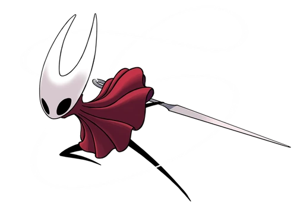

Hornet es una guerrera hábil, princesa y protectora de las ruinas de Hallownest en el videojuego Hollow Knight y la protagonista de su secuela, Hollow Knight: Silksong. Es la hija del Rey Pálido y Herrah la Bestia, criada en Nido Profundo, destacando por usar una aguja e hilo como armas principales.
Hollow Knight: Silksong es un esperado videojuego metroidvania de acción y aventura en 2D, desarrollado por Team Cherry, que actúa como la secuela directa del aclamado Hollow Knight. Lanzado en septiembre de 2025 para PC, consolas PlayStation, Xbox y Nintendo Switch, el juego está protagonizado por Hornet, quien debe explorar el reino de Pharloom. Protagonista: A diferencia del original, el jugador controla a Hornet, la princesa protectora de Hallownest, lo que ofrece una jugabilidad más rápida, ágil y con nuevas mecánicas de movimiento. Historia: La trama comienza tras la captura de Hornet, llevándola a una tierra desconocida llena de nuevos enemigos (más de 165), trampas y secretos. Jugabilidad: Mantiene el estilo metroidvania con exploración, combates desafiantes y plataformas, pero introduce un sistema de misiones (promesas) y herramientas artesanales para Hornet. Desarrollo: Originalmente planeado como un DLC, el proyecto creció hasta convertirse en una secuela completa e independiente. Se ha destacado por su gran calidad, diseño artístico y banda sonora, siendo considerado una experiencia indispensable para los seguidores del género.